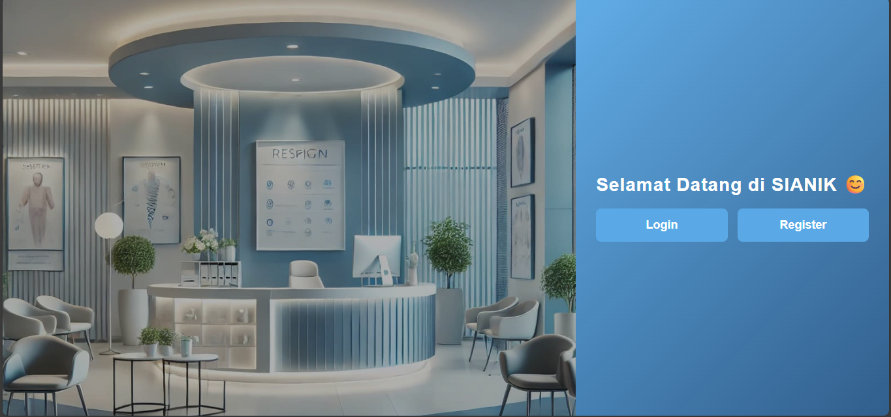
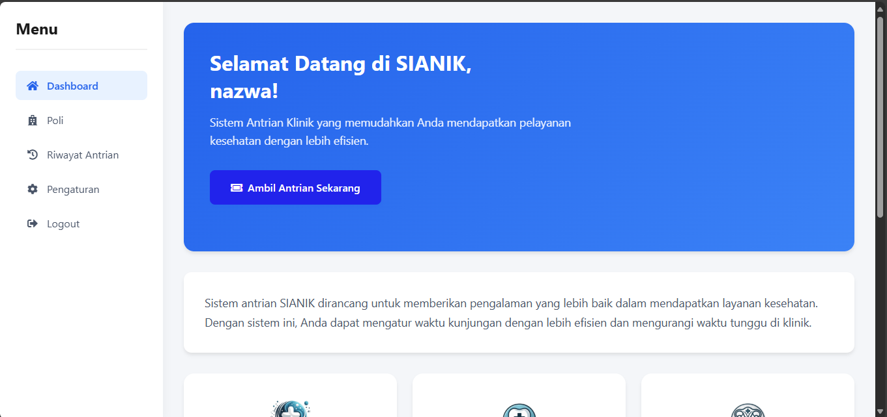

Sistem Antrian Klinik
Project ini adalah perancangan User Interface (UI) untuk sistem antrian klinik berbasis website. Fokusnya adalah menciptakan antarmuka yang responsif, mudah digunakan, dan membantu pasien dalam pendaftaran antrian secara online.
Tujuan dari project ini untuk mempermudah proses pendaftaran dan pengelolaan antrian pada layanan klinik, mengurangi kerumunan, dan mempercepat layanan.
Fitur yang dirancang dalam UI:
- Halaman pendaftaran antrian online
- Dashboard status antrian pasien
- Notifikasi panggilan antrian
- Riwayat kunjungan pasien
- Admin panel untuk kelola data pasien dan antrian
Tools: Figma, HTML, CSS
Peran: UI Designer


Tools